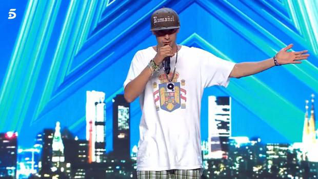

El Rumañol sosteniendo las banderas de Rumanía y España | El Rumañol

Maxi Daniel Nica durante su actuación en el show
televisivo Got Talent | Telecinco
FACEBOOK COMMENTS WILL BE SHOWN ONLY WHEN YOUR SITE IS ONLINE